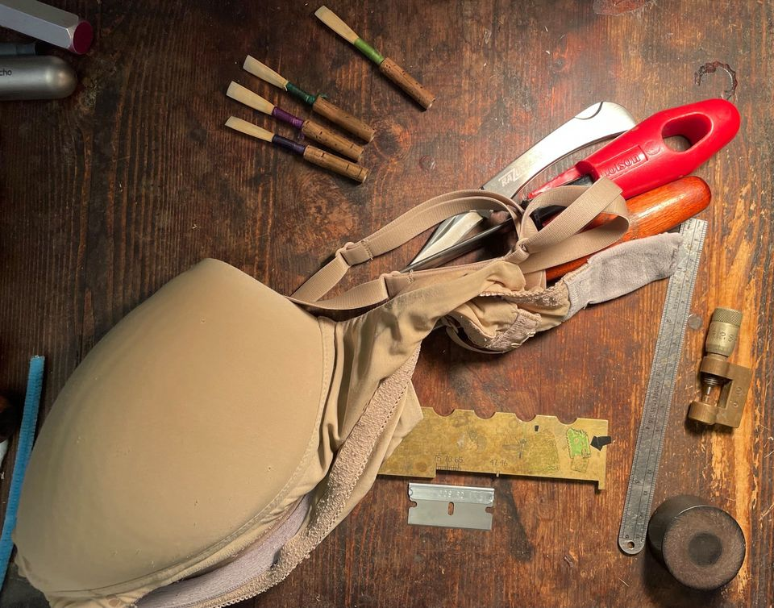

"Composing is improvisation slowed down."
Wayne Shorter
"You'll have bad times, but that'll always wake you up to the good stuff you weren't paying attention to."
Robin Williams, Good Will Hunting
"The most exciting rhythms seem unexpected and complex, the most beautiful melodies simple and inevitable."
W. H. Auden
"Mrs. Dalloway said she would buy the flowers herself."
Virginia Woolf, Mrs. Dalloway
"I remember once going to see him when he was ill at Putney. I had ridden in taxi cab number 1729 and remarked that the number seemed to me rather a dull one, and that I hoped it was not an unfavourable omen. 'No,' he replied, 'it is a very interesting number; it is the smallest number expressible as the sum of two cubes in two different ways.'"
1729 = 13 + 123 = 93 + 103
G.H. Hardy recalls a moment with Ramanujan
Small YouTube Culture
Big Joel
An investigation into one person's struggle with achievement despite "doing everything right" - a perspective on the success and failures of others and ourselves, and how we interact with criticism
"When all of those records came out, I didn't know that they would be thought of as Classics or ABCs of modern jazz. Most of those tunes came out just like that - real quick...and if anything was behind them it was like a wish that was manifested musically... maybe a wish for eternity, or a beautiful girl."
Wayne Shorter, on the impact and longevity of his music
One Art
Elizabeth Bishop
Lose something every day. Accept the fluster
of lost door keys, the hour badly spent.
The art of losing isn't hard to master.
Then practice losing farther, losing faster:
places, and names, and where it was you meant
to travel. None of these will bring disaster.
I lost my mother's watch. And look! my last, or
next-to-last, of three loved houses went.
The art of losing isn't hard to master.
I lost two cities, lovely ones. And, vaster,
some realms I owned, two rivers, a continent.
I miss them, but it wasn't a disaster.
—Even losing you (the joking voice, a gesture
I love) I shan't have lied. It's evident
the art of losing's not too hard to master
though it may look like (Write it!) like disaster.

Katherine Needleman on specifications

"The specifications of everything here are similarly irrelevant.
I posted the initial reed photo in an attempt to help people relax and focus on more important things, but I still got at least one (always polite and flattering) PM a day saying, "yeah, but can you please tell me what XYZ you use and what are the exact measurements of your ABC?"
Here is why my/your/your teacher's/Big Fancy Man's reed/undergarment measurements and specifications actually don't matter:
1) Our bodies/faces/mouths/teeth/lungs are all different. Our needs and materials are ever-changing.
2) We have to know what we want first or it's all a total waste of time. No one wants numbers and data points. Often, we don't know what we want or aren't even happy when we get what we initially thought we wanted.
3) We want this stuff to be awesome and supportive, but can totally live without it being that way.
4) Actual skill lies is in being able to make the most of one's imperfections.
5) Too many options can be distracting.
These are all the things I use for measuring, in this photo. I got the micrometer for $25. I could enumerate the reasons it is better than the many-hundreds-of-dollars ones, but the main one is that I don't spend hours measuring every little part of my reed, which would be a total waste of time because of #3. I get to spend that time doing better things.
So, I think it's better to focus on what you are creating with all your junk."
Regarding the bra in the photo, Needleman replies:
"Its specifications and measurements are irrelevant to everyone else. No one sees it. No one cares about it. What suits me doesn't suit you. Etc"
There was once a farmer in ancient China who owned a horse. “You are so lucky!” his neighbours told him, “to have a horse to pull the cart for you.” “Maybe,” the farmer replied.
One day he didn't latch the gate properly and the horse ran away. “Oh no! That is terrible news!” his neighbours cried. “Such bad luck!” “Maybe,” the farmer replied.
A few days later the horse returned, bringing with it six wild horses. “How fantastic! You are so lucky,” his neighbours told him. “Maybe,” the farmer replied.
The following week the farmer's son was breaking-in one of the wild horses when it threw him to the ground, breaking his leg. “Oh no!” the neighbours cried. “Such bad luck, all over again!” “Maybe,” the farmer replied.
The next day soldiers came and took away all the young men to fight in the army. The farmer's son was left behind. “You are so lucky!” his neighbours cried. “Maybe,” the farmer replied.